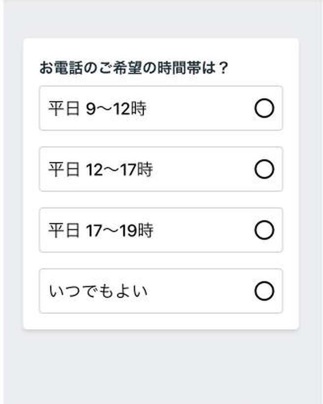
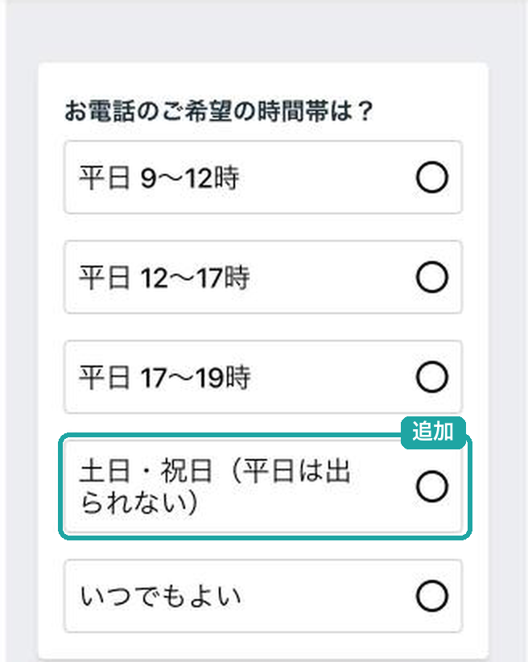

00 概要
インスタントフォームの「お電話のご希望の時間帯」に、土日の選択肢を追加しました
11/26の週次MTGで出た「土日に来た申込の半分が『いつでもよい』。平日に出られない人の選択肢が無いからでは」という仮説を受けて、選択肢を1つ足しました。ほかの質問・文言・予算・ターゲット・バナーは変えていません。
変えた質問お電話のご希望の時間帯は？4問のうち4問目
選択肢4 → 5「土日・祝日（平日は出られない）」を追加
対象の広告5本配信中の5本すべてを新しいフォームに切替
反映11/2617時に5本とも公開（Metaの確認中）
新しいフォームを作成今のフォームを複製して選択肢だけ追加
広告5本に反映公開済み・審査中
申込の通知・台帳テストの申込で受け取りまで確認（OK）
効果の確認来週の定例で「いつでもよい」の割合と通電率を見る
01 ビフォー・アフター（実際のフォーム画面）
お電話のご希望の時間帯
Metaの管理画面にある公式のフォームプレビューを、そのまま撮っています（実際のスマホではプルダウンで選ぶ形です）。
BEFOREこれまで（選択肢4つ）

AFTERこれから（選択肢5つ）

なぜ足したか土日に来た申込は平日に電話がつながらず、半分は「いつでもよい」を選んでいた。平日に出られない人が選べる欄が無かった可能性がある。
「いつでもよい」は残す本当にいつでもよい人もいるため削らずに、いちばん下へ。土日を選んだ人は土日に電話する前提で動けます。
見ること①「いつでもよい」を選ぶ人が減るか
②「土日・祝日」を選んだ人に、土日に電話してつながるか
②「土日・祝日」を選んだ人に、土日に電話してつながるか
02 変えていないところ・申込の流れ
申込の流れはこれまでどおりです
新しいフォームの申込も、これまでと同じスプレッドシートに入り、Teamsの通知と施策管理シートの「10_リード台帳」に自動で入ります。テストの申込を1件流して、申込一覧に入り、通知の仕組みまで届くことを確認しました（テストのデータは台帳・Teamsには入らない設定です）。台帳の「連絡可能時間帯」には選んだ答えがそのまま入るので、台帳側の対応は不要です。
広告（バナー5本）変更なし
→
インスタントフォーム時間帯の選択肢だけ追加
→
申込一覧のスプレッドシート同じファイルに新しいシートを追加
→
Teams通知・10_リード台帳変更なし（自動）
変えていないもの
ほかの3つの質問冒頭の説明文連絡先の項目完了画面
予算（1日1万円）ターゲットバナー・本文プライバシーポリシー
03 確認事項
お願い・次に見ること
1
土日の架電（小池さん）
「土日・祝日」を選んだ方には、土日のうちにお電話いただけると仮説の確認ができます。今週末の土日の試しとあわせてお願いします。
2
来週の定例で振り返り
「いつでもよい」の割合・土日の通電率を、変更前の申込と比べてご報告します。